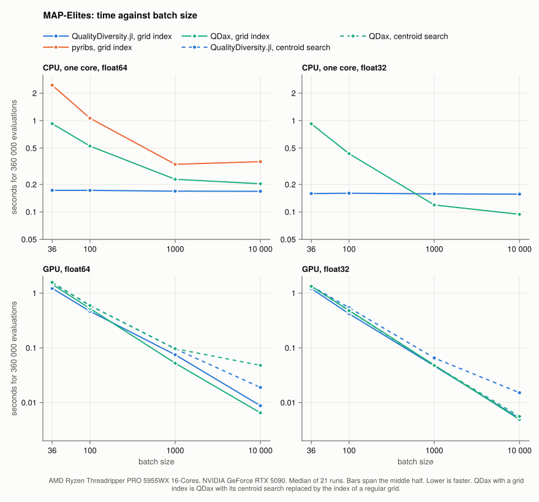
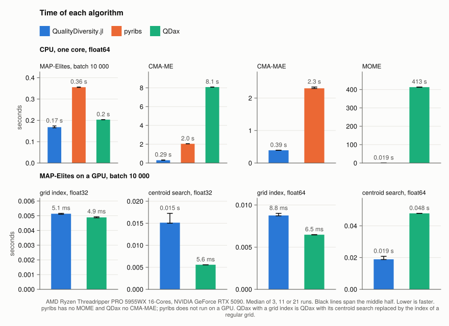

Coming from pyribs or QDax
pyribs and QDax are the two main quality-diversity libraries in Python. This package offers most of their algorithms, under the names below, and checks several of them against those libraries on the same inputs (test/reference; see Verification).
Names
| QualityDiversity.jl | pyribs | QDax |
|---|---|---|
GridArchive | GridArchive | MapElitesRepertoire with grid centroids |
CVTArchive | CVTArchive | MapElitesRepertoire with CVT centroids |
SlidingBoundariesArchive | SlidingBoundariesArchive | — |
CategoricalArchive | CategoricalArchive | — |
UnstructuredArchive | ProximityArchive | UnstructuredRepertoire |
DNSArchive | DNSArchive | DominatedNoveltyRepertoire |
ThresholdArchive | GridArchive(learning_rate=...) | — |
DensityArchive | DensityArchive | — |
SpreadArchive | — | MELSRepertoire |
ParetoGridArchive | — | MOMERepertoire |
VariationEmitter | GaussianEmitter, IsoLineEmitter | MixingEmitter |
CMAEmitter | EvolutionStrategyEmitter | CMAEmitter and its subclasses |
BanditScheduler | BanditScheduler | — |
CMAES, SepCMAES, LMMAES, OpenAIES | CMAEvolutionStrategy, SeparableCMAEvolutionStrategy, LMMAEvolutionStrategy, OpenAIEvolutionStrategy | CMAES |
ImprovementRanker, TwoStageImprovementRanker, … | ImprovementRanker, TwoStageImprovementRanker, … | emitter subclasses |
solve | a loop over scheduler.ask() and scheduler.tell() | a loop over map_elites.update, or scan_update |
cqd_score | cqd_score | — |
heatmap(archive) (Makie) | grid_archive_heatmap, cvt_archive_heatmap | plot_2d_map_elites_repertoire |
ecdfplot(archive) (Makie) | archive_ecdf | — |
Where the libraries differ in a rule, such as how a batch is inserted or how ties are broken, the docstring of the type says which rule this package follows and why.
Differences in approach
- Genotypes. pyribs and QDax store solutions as arrays of numbers. Here a solution can be any Julia type, such as a graph or a molecule, with a
varymethod for it; see the graph tutorial. - Fitness is maximized, as in both libraries.
- One loop. An algorithm is an archive and a tuple of emitters, run by
solveor one round at a time withstep!. - Randomness. Every function that draws random numbers takes the generator, and a run is reproducible from its seed, also with several threads.
Speed
benchmark/compare runs the same problems in all three libraries: MAP-Elites, CMA-ME and CMA-MAE on Rastrigin with 20 parameters and a 100 × 100 grid, MOME, and MAP-Elites and CMA-ME on a GPU. Its README gives the settings, the data of every run and how to reproduce them. In short, on one CPU core:
- MAP-Elites is 2 to 14 times faster than pyribs, most at small batches. It is faster than QDax at batches of 100 and below; at 1000 and above QDax, compiled with JAX and with a grid lookup in place of its centroid search, is 1.2 to 1.35 times slower in
float64and 1.3 to 1.7 times faster infloat32; - CMA-ME is 5 to 7 times faster than pyribs and CMA-MAE 6 times;
- on a GPU at a batch of 10 000, MAP-Elites with a grid is level with QDax in
float32and 1.35 times slower infloat64; with a CVT archive QDax is 2.7 times faster infloat32and 2.5 times slower infloat64.


The objective in these benchmarks takes nanoseconds, so the numbers measure the library. With an expensive objective the evaluation dominates and the libraries differ little.